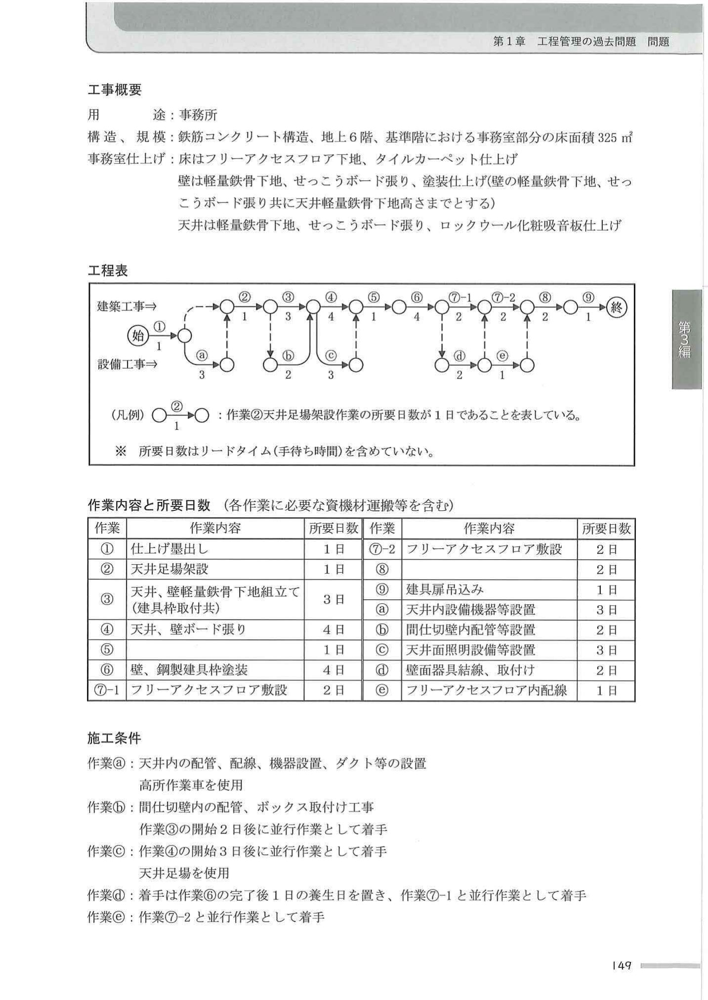

持続可能な建設業を目指して、働き方改革を推進すべく様々な取組が官民一体となって続けられている昨今、建築工事の現場を管理していく上でのあなたの考えについて、次の1.及び2.の問いに答えなさい。
| 工事名 | 共同住宅新築工事 |
|---|---|
| 主要用途 | 共同住宅 52戸 |
| 用途地域 | 住居地域 6m道路隣接 |
| 主要構造 | 鉄筋コンクリート構造 地上7階建て |
| 工期 | 2024年1月〜2025年6月 |
| 面積 | 敷地2,350.00㎡／建築758.85㎡／延床4,950.60㎡／最高高さ23.25m／1〜4階3.3m、5〜7階3.0m／エレベーター乗用8人乗り1台 |
| 根切深さ | 2.5m |
|---|---|
| 山留め | 親杭横矢板工法 |
| 地業 | 現場造成杭（アースドリル工法） |
| コンクリート | 普通コンクリート |
| 型枠 | コンクリート型枠用合板／支保工：パイプサポート |
| 鉄筋 | 工場加工、現場組立て／柱・梁主筋：ガス圧接継手 |
| 屋根 | 陸屋根：アスファルト露出断熱防水＋アルミ製笠木／バルコニー：モルタル下地＋ウレタン系塗膜防水／外部廊下：コンクリート直均し＋ビニル床シート／外部階段：モルタル下地＋ビニル床シート |
|---|---|
| 外壁 | コンクリート打放し＋防水形複層塗材／内断熱工法（現場発泡断熱材吹付け） |
| 手すり壁 | バルコニー：アルミ製既製品 H=1.2m／外部廊下・階段：コンクリート打放し＋防水形複層塗材＋ステンレス製壁付手すり |
| 建具 | 風除室：ステンレス製オートロック式自動扉＋強化ガラス／玄関：化粧シート張り鋼製扉／窓：アルミ製サッシ（1〜2階網入りガラス／3〜7階フロートガラス） |
| 床 | 居室：コンクリート直均し＋乾式二重床＋フローリングボード／水廻り：コンクリート直均し＋乾式二重床＋耐水合板＋ビニル床シート／風除室：モルタル下地＋ノンスリップタイル |
|---|---|
| 壁 | 居室：軽量鉄骨下地＋せっこうボード＋ビニルクロス／水廻り：軽量鉄骨下地＋シージングせっこうボード＋ビニルクロス／風除室：モルタル下地＋有機系接着剤による小口タイル |
| 天井 | 居室・水廻り：軽量鉄骨下地＋せっこうボード＋ビニルクロス／風除室：軽量鉄骨下地＋アルミスパンドレル |
| 建具他 | 居室：化粧シート張り木製扉（枠共）／水廻り：ユニットバス、洗面化粧台、システムキッチン／風除室：集合郵便受け、インターホンパネル |
| 構内舗装 | 駐車場：アスファルト舗装／駐輪場：コンクリート舗装／アプローチ：インターロッキング舗装 |
|---|---|
| 囲障・植栽 | 化粧フェンス／駐車場入口：レール式門扉／敷地境界：中木、低木混栽 |
① 工種名又は作業名等／② あなたが考える有効な現場作業の軽減策とそれが現場作業の軽減に繋がる理由／③ ②の実施に当たって確保すべき品質とそのための軽減策における施工上の留意事項
※ 工事概要にない工事・建築設備工事・計画変更確認申請が必要な内容・竣工引渡し時期の遅れに繋がる内容・工程短縮のみで軽減につながらない内容は不可。
① これまでの建設現場における施工や工程、管理等の業務において、施工に従事する者の時間外労働を増長させていた要因とそれが時間外労働の増長に繋がっていた理由／② ①の対策として、あなたが有効と考える建設現場における組織としての取組や工夫
建築工事における次の1.〜3.の設備又は機械を安全に使用するための留意事項を、それぞれ2つ具体的に記述しなさい。
ただし、解答はすべて異なる内容の記述とし、保護帽や要求性能墜落制止用器具等の保護具の使用、気象条件、資格、免許及び届出に関する記述は除く。また、使用資機材に不良品はないものとし、2.を除き保守点検に関する記述は不可。
1. バケット容量0.5㎥程度のバックホウ
2. 工事用の仮設電力設備
3. ホイール式垂直昇降型の高所作業車
市街地での事務所ビル新築工事において、右の工事概要に示す事務所部分の内装工事に関する作業工程について、次の1.〜4.の問いに答えなさい。
工程表は計画時点で、作業内容と所要日数・施工条件を合わせて示している。作業⑤および作業⑧は作業内容を記載していない。作業⑦は作業ⓓ及び作業ⓔとの関係を示すため⑦-1、⑦-2に分けて示す。
設備工事は電気設備（照明、コンセント）、通信設備、警報設備、空調設備とする。各作業は一般的手順、試験検査は省略。

次の1.〜4.の問いに答えなさい。
ただし、1.〜4.の解答はすべて異なる内容の記述とし、材料（仕様、品質、搬入等）、作業環境（騒音、振動、気象条件等）、清掃及び安全に関する記述は除く。
1. タイル工事において、有機系接着剤を用いて外壁タイル張りを行うときの施工上の留意事項を2つ、具体的に記述しなさい。
ただし、タイルの割付け、材料の保管及び下地に関する記述は除く。
2. 金属工事において、パラペット天端に押出形材の既製品であるアルミニウム製笠木を設けるときの施工上の留意事項を2つ、具体的に記述しなさい。
ただし、材料の保管及び防水層に関する記述は除く。なお、パラペットは現場打ちコンクリートとする。
3. 左官工事において、内装床の張物下地となるセルフレベリング材塗りを行うときの施工上の留意事項を2つ、具体的に記述しなさい。
なお、セルフレベリング材は固定プラント式のスラリータイプとし、専用車両で現場まで輸送供給されるものとする。
4. 内装床工事において、ビニル床シートを平場部に張り付けるときの施工上の留意事項を2つ、具体的に記述しなさい。
ただし、下地に関する記述は除く。
次の1.〜8.の各記述において、（ ）に当てはまる最も適当な語句又は数値の組合せを、下の枠内から1つ選びなさい。
1. 安全な通路（労安則）
作業場に通ずる場所及び作業場内には、労働者が使用するための安全な通路を設け、かつ、これを常時有効に保持しなければならない。
通路で主要なものには、これを保持するため、通路であることを示す表示をしなければならない。通路には、正常の通行を妨げない程度に、（ a ）又は照明の方法を講じなければならない。
また、（ b ）に設ける通路は用途に応じた幅を有し、通路面から高さ（ c ）m以内に障害物を置いてはならない。
2. 根切り工事（ボイリング・盤ぶくれ）
根切り工事において、掘削底面付近の砂質地盤に上向きの浸透流が生じ、この水の浸透力が砂の水中での有効重量より大きくなり、砂粒子が水中で浮遊する状態を（ a ）という。
（ a ）が発生し、沸騰したような状態でその付近の地盤が破壊する現象を（ b ）という。
また、掘削底面やその直下に難透水層があり、その下にある被圧地下水により掘削底面が持ち上がる現象を（ c ）という。
3. 既製コンクリート杭の埋込み工法
既製コンクリート杭の埋込み工法において、杭心ずれを低減するためには、掘削ロッドの振止め装置を用いることや、杭心位置から直角二方向に逃げ心を取り、掘削中や杭の建込み時にも逃げ心からの距離を随時確認することが大切である。
一般的な施工精度の管理値は、杭心ずれ量がD/（ a ）以下（Dは杭直径）、かつ、（ b ）mm以下、（ c ）が1/100以内である。
4. 鉄筋工事（鉄筋相互のあき・かぶり厚さ）
鉄筋工事において、鉄筋相互のあきは（ a ）の最大寸法の1.25倍、（ b ）mm及び隣り合う鉄筋の径（呼び名の数値）の平均の1.5倍のうち最大のもの以上とする。
鉄筋の間隔は、鉄筋相互のあきに鉄筋の最大外径を加えたものとする。
柱及び梁の主筋のかぶり厚さは、D29以上の異形鉄筋を使用する場合、径（呼び名の数値）の（ c ）倍以上とする。
5. 型枠支保工（鋼管枠・パイプサポート）
型枠支保工において、鋼管枠を支柱として用いるものにあっては、鋼管枠と鋼管枠との間に（ a ）を設け、支柱の脚部の滑動を防止するための措置として、支柱の脚部の固定及び（ b ）の取付け等を行う。
また、パイプサポートを支柱として用いるものにあっては、支柱の高さが（ c ）mを超えるときは、高さ2m以内ごとに水平つなぎを2方向に設けなければならない。
6. コンクリートポンプ工法
コンクリートポンプ工法による1日のコンクリートの打込み区画及び（ a ）は、建物の規模及び施工時間、レディーミクストコンクリートの供給能力を勘案して定める。
コンクリートの打込み速度は、スランプ18cm程度の場合、打ち込む部位によっても変わるが、20㎥/hから（ b ）㎥/hが目安となる。
また、スランプ10cmから15cmのコンクリートの場合、公称棒径45mmの棒形振動機1台当たりの締固め能力は、10㎥/hから（ c ）㎥/h程度である。
7. 寒中コンクリート
コンクリート工事において、寒中コンクリートでは、レディーミクストコンクリートの荷卸し時のコンクリート温度は、原則として（ a ）℃以上20℃未満とし、加熱した材料を用いる場合、セメントを投入する直前のミキサ内の骨材及び水の温度は、40℃以下とする。
打込み後のコンクリートは、初期凍害を受けないよう、必要な保温養生を行う。初期養生の期間は、コンクリートの圧縮強度が（ b ）N/㎟が得られるまでとし、この間は、打ち込んだコンクリートのすべての部分が0℃を下回らないようにする。
また、（ c ）養生中は、コンクリートが乾燥しないように散水等で湿潤養生する。
8. 鉄骨の完全溶込み溶接
鉄骨の完全溶込み溶接において、突合せ継手の余盛高さの最小値は（ a ）mmとする。
裏当て金付きのT継手の余盛高さの最小値は、突き合わせる材の厚さの1/4とし、材の厚さが40mmを超える場合は（ b ）mmとする。
裏はつりT継手の余盛高さの最小値は、突き合わせる材の厚さの1/（ c ）とし、材の厚さが40mmを超える場合は5mmとする。
現状の自動採点は暫定の推定値で動いています。一括採点・個別採点で「○」が出てもCIC本で再確認してください。
次の1.〜3.の各法文において、（ ）に当てはまる正しい語句を、下の該当する枠内から1つ選びなさい。
1. 建設業法（第24条の8：施工体制台帳及び施工体系図の作成等）
第24条の8 特定建設業者は、発注者から直接建設工事を請け負った場合において、当該建設工事を施工するために締結した下請契約の請負代金の額（当該下請契約が2以上あるときは、それらの請負代金の額の総額）が政令で定める金額以上になるときは、建設工事の適正な施工を確保するため、国土交通省令で定めるところにより、当該建設工事について、下請負人の商号又は名称、当該下請負人に係る建設工事の内容及び（ ① ）その他の国土交通省令で定める事項を記載した施工体制台帳を作成し、工事現場ごとに備え置かなければならない。
4 第1項の特定建設業者は、国土交通省令で定めるところにより、当該建設工事における各下請負人の施工の（ ② ）関係を表示した施工体系図を作成し、これを当該工事現場の見やすい場所に掲げなければならない。
2. 建築基準法施行令（第136条の6：建て方）
第136条の6 建築物の建て方を行なうに当たっては、（ ③ ）を取り付ける等荷重又は外力による倒壊を防止するための措置を講じなければならない。
2 鉄骨造の建築物の建て方の（ ④ ）は、荷重及び外力に対して安全なものとしなければならない。
3. 労働安全衛生法（条項・本文は5/21追記予定）
現状の自動採点は暫定の推定値で動いています。一括採点・個別採点で「○」が出てもCIC本で再確認してください。